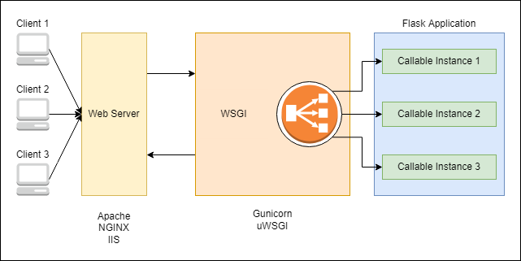
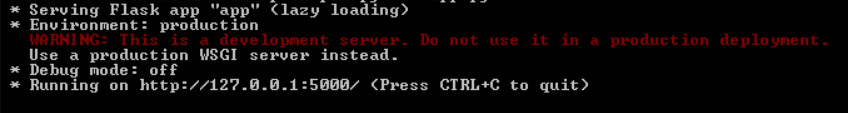
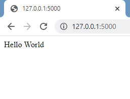
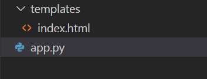
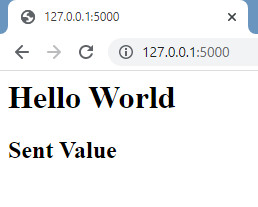
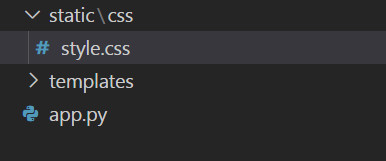
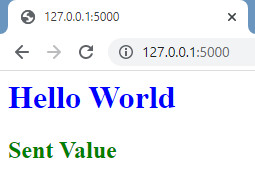
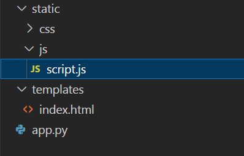
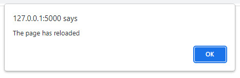

August 14, 2022
Introduction to Building apps using Flask
Flask is a web application micro-framework, which helps in the development of light-weight applications written in Python for the web. These applications take advantage of REST API architecture, which can be used either to just produce back-end services or entire GUI incorporated platforms. This article gives an introduction to setting up and start building web applications using Python-Flask.
Background
Before starting with the implementation, we need to understand how the web applications are deployed to the web servers. Here is a diagram demonstrating the different components in a production setup with an application hosted on a server.

- Suppose we have a web Application (A) and it is hosted on a web server (B). The web application can be implemented using any framework, here let’s consider it’s Flask. While the most commonly used servers are Apache, nginx and IIS.
- Clients (C) make requests to the web server (B) to access the app (A). These requests are supposed to be served by the application (A). But we need a protocol that takes care of the interaction between app (A) and server (B).
- This protocol is called Web Server Gateway Interface (WSGI), which is responsible for the interaction between server and app. It also takes care of servicing multiple clients by starting up multiple instances of the app (A), such that these client instances stay isolated in operation. Some widely used production WSGI services are Gunicorn and uWSGI.
Flask is based on two primary components, WSGI protocol and Jinja2 Template Engine. While WSGI protocol enables the application to establish interaction with the web server. During implementation Flask takes advantage of Werkzeug’s WSGI development server, which sets up the application in local. We will be seeing that in action in the following sections.
Jinja2 is responsible to use client-side templates and data sources to render dynamic pages.
- These client-side templates can be created using HTML, CSS, JS and so on.
- The data sources can be local variables, files, databases or models, which populate the placeholders in the said templates.
We will be talking more about Jinja and rendering templates in the upcoming sections.
Installation
Assuming we have Anaconda Python installed in our system. First we need to create a new conda environment as follows:
$ conda create -n flask-app
Now in this new environment we need to install flask as follows:
$ conda activate flask-app
(flask-app)$ pip install flask
Now we can get started with actually developing a simple web application using Flask.
Basic Web Application
Create a new file in this environment as ‘app.py’ and write the code as follows:
from flask import Flask
app = Flask(__name__)
@app.route('/')
def function():
return 'Hello World'
if __name__ == '__main__':
app.run()
Let’s first run the application from the terminal using the following command:
(flask-app)$ python app.py
The terminal should read as follows:

Now we can open ‘http://127.0.0.1:5000/’ in the browser, and it should show up as follows:

This means that our application is running, and we are obtaining the expected output. Now let’s understand the code that we have written.
from flask import Flask
From the ‘flask’ package we are importing the ‘Flask’ class.
app = Flask(__name__)
Here we instantiate a new Flask application and store it in a variable ‘app’. This instance (app) is actually the WSGI app that is used on a server. In flask, we need not set up WSGI app separately since it’s natively provided.
@app.route('/')
def function():
return 'Hello World'
Here ‘@app.route’ is called a decorator and it is used to define a route or an API endpoint that can be used as an entry-point on a deployed application. It takes in two parameters (rule, **options). ‘rule’ is where we define the endpoint.
Here we are sending ‘rule = ‘/’’, but rule can also be something like ‘rule = ‘/feature’.
app.run()
Finally we are initiating the execution of WSGI app. run() takes in five arguments: host, port, debug, load_dotenv and options. All these are optional. Instead of running the application on default ‘127.0.0.1:5000’, we can run it on custom host:port. We can run the application in debug mode by setting ‘debug=True’. And ‘load_dotenv’ is to load .env or .flaskenv files to load specific flask environment variables.
Including HTML in the web application
First of all to include html files we need to create a ‘templates’ folder in the same folder as that of ‘app.py’, and put our html file within this folder. The folder structure should look something as shown.

Now we need to import another module from the flask package, ‘render_template’ which uses Jinja2 template engine to render a page, provided a template html file. We are going to mention index.html as the template and also pass a value to populate the ‘result’ placeholder.
Create an index.html file in the templates folder as follows:
<html>
<body>
<h1>Hello World</h1>
<h2>{{ result }}</h2>
</body>
</html>
Update your [app.py](http://app.py) as follows:
from flask import Flask, render_template
app = Flask(__name__)
@app.route('/')
def function():
res = 'Sent Value'
return render_template('index.html', result=res)
if __name__ == '__main__':
app.run()
And now run the application, you should see the browser result as follows:

Including CSS in the web application
To include CSS files, we need to create the folder structure as follows:

Write the following code in style.css:
h1 {
color: blue;
}
h2 {
color: green;
}
And we need to include the following line in our tag of the template index.html :
<link rel="stylesheet" href="{{ url_for('static', filename='css/style.css') }}" />
And also include a new module in our app.py, ‘url_for’
from flask import Flask, render_template, url_for
Now in browser we can see the stylised version.

Including JS in the web application
Including JS, similar to CSS. Folder structure as follows:

Add the following line to script.js:
alert("The page has reloaded");
Following line in tag:
<script type="text/javascript" src="{{ url_for('static', filename='js/script.js') }}"></script>
Finally the result in browser:

Conclusion
In this article we had a quick overview of what is Flask, and how it works. We learnt to build a basic REST API application using Flask and finally provide rendered pages using HTML, CSS and JS. With these fundamentals, quick prototype applications can be built. As we saw Flask is a flexible, micro-framework for light-weight applications. For large scale production application we have more robust framework such as Django.